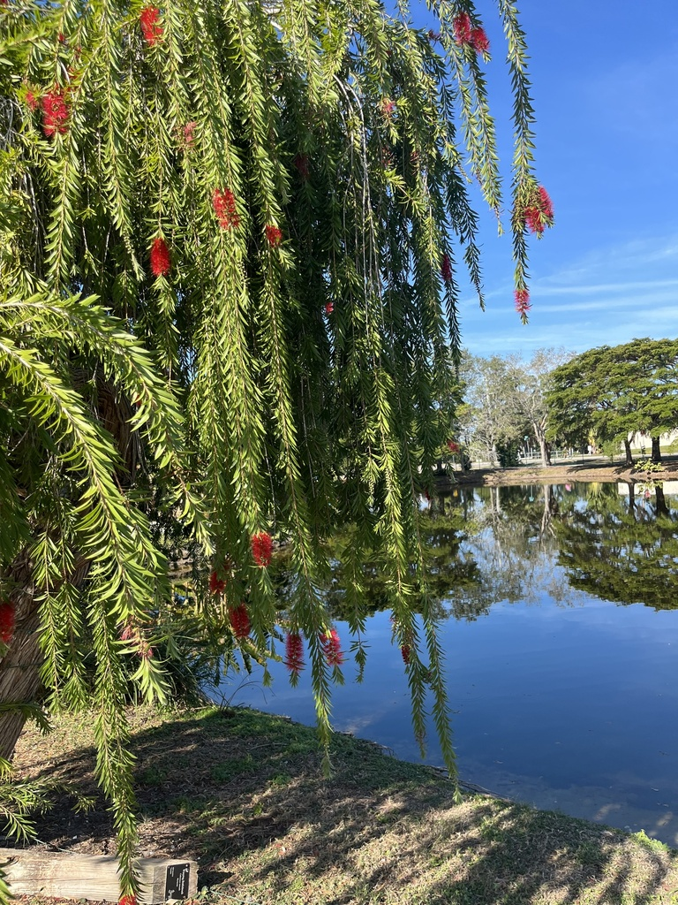

- The showy red "bottlebrush" is not made of petals — it's a burst of pollen-bearing stamens.
- Crush a leaf for a pleasant citrus scent.
- Hummingbirds, butterflies, and honeybees swarm the nectar-rich blooms, making this one of the most productive wildlife plants in the park.
- Though often sold as a tree, it is technically a large shrub trained into tree form.
Native to eastern Australia, primarily along watercourses in Queensland and New South Wales, with a disjunct population in the Kimberley region of Western Australia. It grows naturally in moist habitats such as riverbanks, creek edges, and flood-prone areas.
- The nectar-rich flowers are absolute magnets for local wildlife, making them highly favored by hummingbirds, butterflies, and honeybees.
- The "bottles" you see are not actually petals; the showy, colorful parts of the flower are the stamens (the pollen-bearing male organs).
- When the narrow, pale green leaves are crushed, they release a pleasant, distinctly citrusy aroma.
- While they are highly drought-tolerant once established and can handle short bursts of cold, they dislike highly alkaline soil and prefer full sun.
- While sold in garden centers trained into a single-trunk "tree" form, the Weeping Bottlebrush is biologically classified as a large shrub that naturally grows weeping, fountain-like branches
The nectar-rich red bottlebrush spikes are absolute magnets for Florida wildlife, especially hummingbirds, butterflies (including zebra longwings), and honeybees. In Florida gardens it serves as a high-value nectar source during the warm months when many other plants have finished blooming.
The small woody seed capsules provide food for various birds and small mammals. Its dense, weeping canopy offers excellent cover and nesting sites for birds.
While not a Florida native, it is considered a relatively well-behaved non-native that supports local pollinators without becoming invasive here.
Reproduction by seeds held in small woody cup-like capsules clustered around stems.
Bright red "bottlebrush" spikes 3–4 inches long, appearing mainly spring and summer — highly attractive to hummingbirds, butterflies, and bees.
Small gray or brown woody capsules that look like beads on a necklace. Leaves: Narrow, pale green, lance-shaped, and strongly citrus-scented when crushed.
The cascading weeping form is distinctive year-round — no other park tree has quite that silhouette. In bloom, the vivid red bottlebrush spikes are unmistakable. Crush a leaf to confirm with the citrus scent. Look for hummingbirds hovering at the branch tips.
The flowers can be steeped into a sweet edible tea or syrup, but this isn't grown as a food plant in Florida.
It has no known toxicity to people, dogs, or cats — handle it freely.


- © elurding (CC-BY-NC), via iNaturalist
- © kathynoran88 (CC-BY-NC), via iNaturalist
- © Lilah Thomas (CC-BY-NC), via iNaturalist
- © Joni Hoezee (CC-BY-NC), via iNaturalist